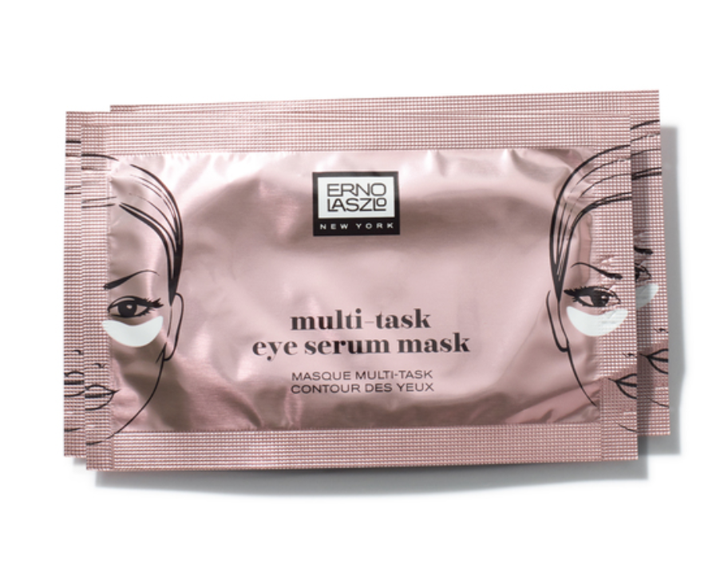

influenster
New Eye Masks to Fake 8 Hours of Sleep in 2018
Eye see you, girl.
Will 2018 be the year you finally score eight hours of sleep each night? If luck is on your side, it just might be. But just on the off chance that a full night of beauty sleep still eludes you in the coming days (ahem Daylight Savings!), relax. There are beauty products to fake it 'til you make it! We spotted a whole new player in the beauty sleep game and it has to do with waking you up. Instead of hiding dark circles and puffiness with concealer, banish them entirely with help from an eye mask. More and more skincare brands are dropping masks targeting your peepers. With powerful ingredients to decrease puffiness, minimize dark circles, and even target signs of aging, these eye masks might be just what those tired eyes need to wake up. Check out some of the newest eye masks to hit the beauty aisle. Which would you love to try?

The Best NARS Orgasm Blush Dupes
Milani Baked Blush in Luminoso and Dolce Pink, $8
Influensters are saying both Luminoso and Dolce Pink are Orgasm dupes. When applied, Dolce Pink (bottom review) gives a baby pink glow and has significantly more shimmer than Luminoso (top review), which seems to stay pretty true to shade.
e.l.f. Cosmetics Blush in Candid Coral, $3
e.l.f. Cosmetics is a brand that's always popping up on dupes lists. Their blush is no exception– even the packaging is similar! Influensters say the shade Candid Coral applies most similarly to Orgasm, but luckily if it isn't right for you they have six other shades to flatter your unique skin tone.
Hey, Maria !! I am so glad that you decided to join our ambassador program! If you are receiving this email, then your unique discount code has been activated and you should be ready to go! Please double check that the following information is correct:
Instagram Name: reviews_bynana
Planned Number of Posts: More than 2
Discount Code: bybananas10
Organic Bunny
Are you someone that loves using {Witch Hazel} as your daily toner? If so, you may want to check out our brand new Skin Saving Sunday Series, created alongside Alexandra, the Organic Bunny Esthetician, to learn more about what this ingredient can actually be doing to your skin, hint- it's not always good! 🙈
Because we see so many different routines each day, we thought we would start highlighting some of the most damaging steps we see as many are causing more harm than they are help. To read all about Witch Hazel and our preferred method of toning, head to the brand new blog